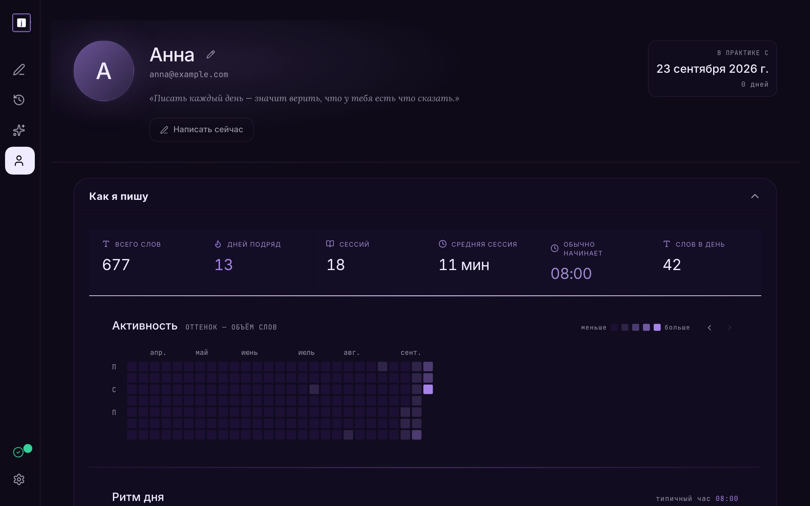
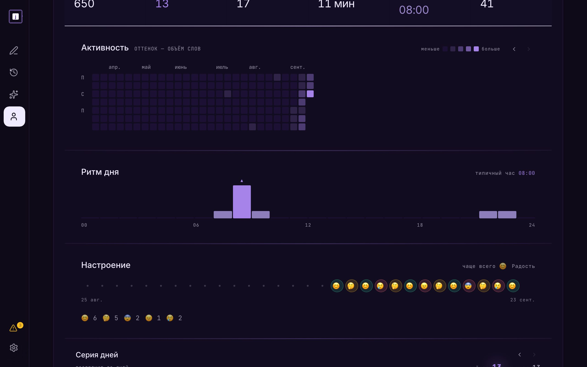
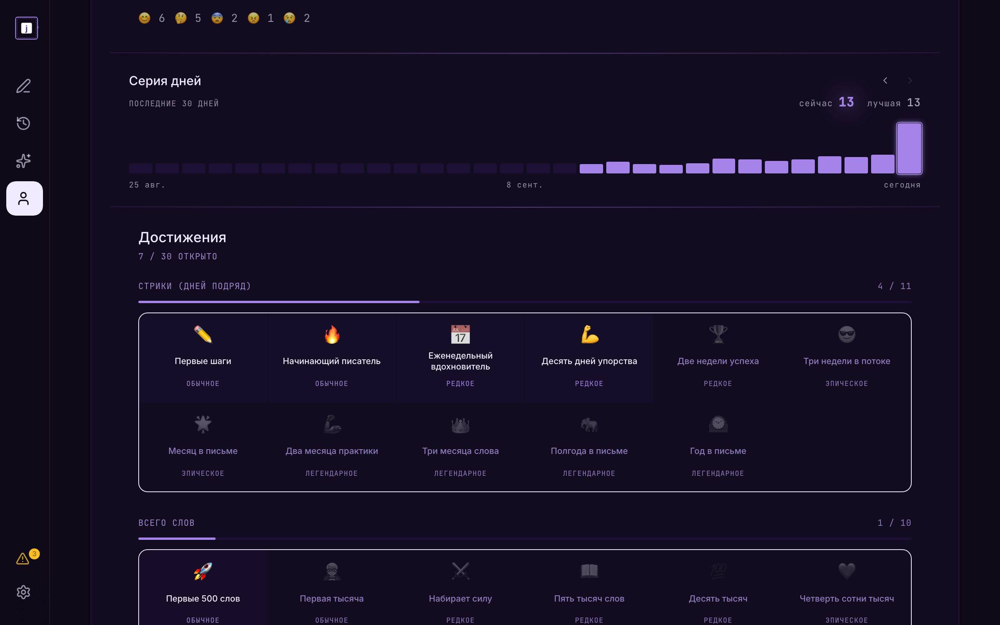
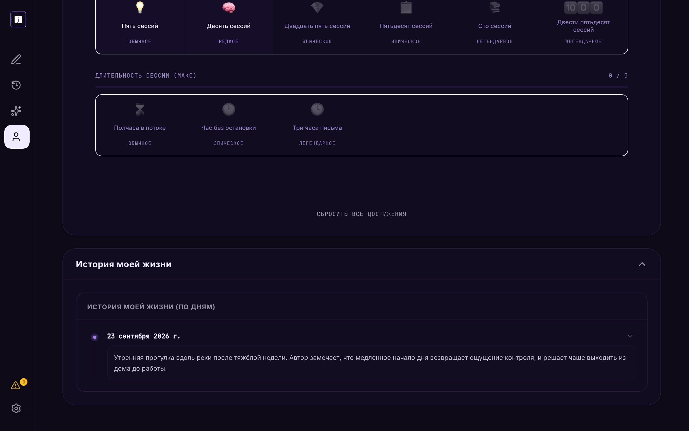

Профиль и статистика
Страница Профиль в меню слева показывает, как вы пишете: сколько, когда, в каком настроении и как долго держите серию.
Шапка профиля

- Имя. Чтобы изменить, нажмите на карандаш рядом с ним, введите новое имя и нажмите Enter.
- E-mail вашего аккаунта — под именем.
- Цитата о письме — меняется сама каждые несколько секунд.
- Написать сейчас — открывает страницу письма.
- В практике с — дата, с которой вы пишете в приложении.
В гостевом режиме вместо имени написано Локальный аккаунт, и поменять его нельзя.
Пока нет ни одной сохранённой сессии, вместо статистики будет надпись Статистика появится после первой сессии. Напишите и сохраните первую заметку — всё появится.
Как я пишу
Раздел Как я пишу можно свернуть, нажав на заголовок. Приложение запомнит, свёрнут он или нет. Вверху раздела — шесть показателей:
| Показатель | Как считается |
|---|---|
| всего слов | Сколько слов вы написали за всё время. |
| дней подряд | Текущая серия дней, см. Серия дней. |
| сессий | Сколько раз вы сохраняли сессию письма. Продолжение старой заметки — тоже сессия. |
| средняя сессия | Сколько минут в среднем длится одна сессия. |
| обычно начинает | Час, в который вы пишете чаще всего. |
| слов в день | Все слова, поделённые на число дней, когда вы писали. Дни без письма не считаются. |
Активность, ритм, настроение

Активность
Тепловая карта примерно за 26 недель: каждая клетка — день. Чем ярче клетка, тем больше слов вы написали в этот день (оттенок — объём слов, шкала от меньше до больше). Наведите на клетку, чтобы увидеть дату и число слов. Стрелками можно листать карту назад, к более ранним месяцам.
Ритм дня
Показывает, в какие часы вы обычно пишете, и отмечает типичный час — тот, когда это бывает чаще всего.
Настроение
Собирается из эмодзи, которые вы выбираете при сохранении заметки, на шаге Как ты себя чувствуешь? (подробнее — в разделе Как писать). Учитываются заметки за последние 60 дней. Лента показывает последние 30 дней: в дни с отмеченным настроением стоит эмодзи, в остальные — точка. Рядом написано, какое настроение бывает чаще всего.
Если за последние 60 дней вы ни разу не выбирали эмодзи, этого блока не будет. Настроение необязательно: пропускайте этот шаг, когда не хочется.
Серия дней

Серия — сколько дней подряд вы писали. День засчитывается, если в этот день вы сохранили хотя бы одну сессию: новую заметку или продолжение старой.
- Лента показывает последние 30 дней.
- сейчас — текущая серия, лучшая — самая длинная за всё время.
- Серия не обнуляется, пока вы не пропустили вчерашний день: если сегодня ещё не писали, но писали вчера, она продолжается. Успейте написать что-нибудь до конца дня.
Заморозка
Один пропущенный день в месяц не сбрасывает серию. Если вы пропустили ровно один день, а на следующий снова написали, серия продолжится сама — ничего нажимать не нужно. Когда заморозка сработала, рядом с числом сейчас появляется снежинка с подсказкой Заморозка стрика использована. Второй пропуск в том же месяце уже оборвёт серию.
Достижения
Значки за постоянство и объём. Вверху блока написано, сколько открыто из общего числа и сколько из них легендарных. Значки бывают обычные, редкие, эпические и легендарные. Нажмите на значок, чтобы увидеть, за что он даётся.
| Группа | Ступени |
|---|---|
| Стрики (дней подряд) | от 1 до 365 дней подряд. Учитывается лучшая серия за всё время. |
| Всего слов | от 500 до 500 000 слов. |
| Всего заметок | от 5 до 250. Считаются сессии письма — так же, как показатель сессий. |
| Длительность сессии (макс) | 30, 60 и 180 минут в одной сессии. |
Если вы пишете на нескольких устройствах, достижения и заморозки серии сводятся вместе.
Сбросить все достижения
Внизу раздела Как я пишу есть кнопка Сбросить все достижения. После нажатия появится вопрос «Сбросить все достижения? Это действие нельзя отменить.» Нажмите Сбросить все достижения ещё раз, чтобы подтвердить, или ✕, чтобы передумать.
История моей жизни

Раздел История моей жизни по умолчанию свёрнут — нажмите на заголовок, чтобы раскрыть. Внутри — события по дням: короткий пересказ заметок, а под ним Факты: и Инсайты:.
История собирается из разборов, которые делает ИИ. Пока ни одна заметка не разобрана, раздел пишет: «История жизни пока пуста. Напишите и проанализируйте заметки, чтобы они появились здесь.» Как включить разбор — в разделе ИИ-собеседник и разбор.